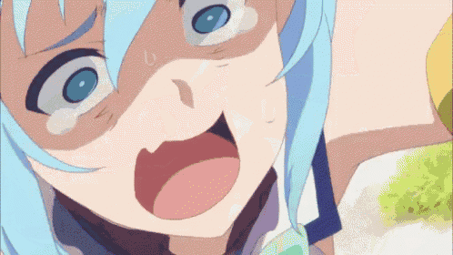

Предистория
Аква - богиня воды, которая встретила Казуму после его смерти и должна была перенести в другой мир. Казума выбрал вариант с фэ нтези миром, где ему предлагались вещи в тот мир, но так как его подгоняла Аква, он решил выбрать её, что не нарушило правил. Теперь дабы вернуться она с Казумой должна победить Короля Демонов
Личность и внешность
У Аквы голубые глаза и волосы, а одежда в бело-синих тонах. Сама Аква, несмотря на то что она богиня, оказывается очень капризной, и лишь из-за того что она богиня, вечно считает себя самой главной. У Аквы все характеристики на высоком уровне, кроме конечно интеллекта и удачи. Аква вечно вляпывается в проблемы, особенно часто этой проблемой оказываетсю долги.
Способности
Несмотря на все, она все же богиня, притом воды. Она обладает заклинаем изгнание нежити, а также и более высокими его версиями, воскрешением (в отличии от остальных жрецов, она может возраждать более одного раза (вероятно бесконечно).) и подобными заклинаниями. Она так же выучила заклинание "красота природы". Бесмертна ли она - неизвестно. Так же она из-за своей божественной ауры притягивает к себе нежить, будто медом намазана.
